|
|
|
|
|
|
|
|
December 13, 2023
At the end of Super Mario World, the second to last screen you see is this:

All of the Koopalings and their implicit daddy- one happy family. Maybe you, an astute Mario liker noticed that something is off. It really only concerns Morton and Roy- if you've played the newest Mario kart (soon to turn 10 next year) you'll know they look like this, and have since they were printing magazines promoting Mario 3:

Perhaps we should review further, because if you aren’t familiar with their names, you’re going to hear them come up quite frequently.

This is Morton, Roy, and Ludwig von Koopa.
In mario 3, they were all the “chunky” kind of boss, who were bigger and could slam the ground.
They all share a general body type, but their styles differ from there.
Morton is sort of like a grey shelled, Bowser Junior type (but before that guy was dubiously born).
He’s got an onion sprout for hair and funny long eyebrows.
Roy is the “cool” one- he’s pink, has some sick shades, and looks constipated all the time.
In Mario World, they decided to give him the worlds goofiest eyebrows.
We care today about Morton and Roy, but it’s worth knowing that both are very similar to
Ludwig Van Koopa,
the easiest to remember Koopaling sporting a composers hairmop and a mono-vampiric buck tooth.
This begs the question: what went wrong in the cast roll sprites pictured below?
 Morton should be Gray, and Roy should be Pink!
Morton should be Gray, and Roy should be Pink!
Many (and maybe nearly all) people tend to answer "they switched Roy and Morton's colors" and call it day-
but that can't be it! Morton would be grey, sure, but Roy would be navy. Your brain retorts- "well maybe
they couldn't show pink, so they settled with blue" since, you know, old consoles had all sorts of
limitations!
I have two more holes to poke:
1. That Navy that Roy is rocking is a different blue from Iggy's Blue. Why use a different one?
2. Wendy is red. Use red for Roy! That’s closer than pink!
Perhaps the craftier of you came up with yet another reason: "Maybe Roy and Morton's boss fights made them
look that way for weirder technical reasons outside of the credits, and the cast roll wanted to reflect
that!"
Pictured below, How the Koopalings in question appear in game:

The above words may have frustrated you. If that's the case, there's a good chance a more honest answer to
the question of "what the hell happened to Roy and Morton's Sprites" is "I don't care." That's fine! I'm not
going to high-road- that's a valid way to feel, and chances are you won't get much out of the remaining
article. Feel free to share this article with someone who IS into weird technical answers to small
curiosities!
At the age of 10 was intrigued by what seemed like contradictory problems- why are Roy and Morton so wildly
different from not only their in-game depictions, but also frustratingly flipped from their key-art?
I do not have obsessive tendencies, but I do know that if I am handed a tangled ball of yarn I will spend
the next immediate 2 hours successfully untangling the knot. That isn't literature by the way, I'm being
literally descriptive- I advise people not to hand me puzzles that are methodically solvable because I
*will* try to solve them.
Mario World was the first video game I ever played. I was 2 at the time, but it wasn't until I was 7 that I
thought the credits looked funny, and was 9 when I started putting the pieces together. I only solved the
riddle at 27 with the help of Vidyasaur (plug) who gave me a missing piece that unraveled the whole puzzle.
If you stay with me, we can unravel this ball of yarn together.
God, Mario World is Ugly
I need to get this out right now: I love Mario World. It is an ugly looking game to me. It is okay, great
even, to love ugly things. Please re-orient yourself if you can't accept that final sentiment- it's merely a
personal one anyways.
 You do not have to agree with me. I love Mario World probably (definitely) more than you, but it is very
much not something that takes full advantage of the graphics power of the SNES
You do not have to agree with me. I love Mario World probably (definitely) more than you, but it is very
much not something that takes full advantage of the graphics power of the SNES
There is a good chance you might have seen a screenshot of Super Mario World and thought "wow, they sure do
love their pure Crayola colors." Why is that? It's the large use of Red, Blue (kind of plum-ish), Yellow,
and Green tones literally everywhere- they dominate aside from purple, orange, and pink for tertiary
splashes of color. Other SNES games use a wider variety of colors, so did Mario World limit their colors on
purpose?
Kind of. In the way someone breaks their knees to claim insurance money as a sort of "financial strategy,"
yes, Mario World chose to do this.
Let's Learn about how Color Palettes work on the SNES!
For simplicity, understand that every object that moves (and doesn't) in the game is made up of these little
squares that are 8x8 pixels. Most things are bigger than a single 8x8 Tile, so enemies (like good old Roy,
pictured below) are made up of multiple tiles. If a programmer wanted to draw a tile manually on the screen
from memory, he'd call a tile, give it a spot, and the tile would draw itself using the following
information: which direction is each tile facing? What color is each pixel? Is it in the foreground or
background?
 Look at him. He’s my Boy, Roy. Boy Koopa.
Look at him. He’s my Boy, Roy. Boy Koopa.
What we care about is the color. Good ol' Roy here is drawn using these 8 colors: 3 Shades of Green, 2
Shades of Orange, 1 Black, 1 white, and 1 transparent (represented by a dreamy ocean blue). All 8x8 tiles
can only have, at most 8 colors in Mario world. If you're going to group multiple tiles together you
(generally) want to make sure they're picking the *same* 8 colors.
Understand? Good. Those are the basics of coloring- now we need to see how the Super Nintendo is limited.
There are LOTS of tiles being repeatedly drawn over the course of a second, so the console is essentially
memorizing a pre-set group of colors to call from a grid battleship style whenever it draws each of the
tiles. But what colors is Mario World keeping track of? How does it determine which colors to use for what
and when? Let me spoil the answer; below is an image that shows the basic color palettes available in a
Mario World level:
 The pattern squares are Transparent tiles. Didn’t want you to think there were a bunch of pink tiles in
every palette! Original version of this image comes from THIS tutorial.
The pattern squares are Transparent tiles. Didn’t want you to think there were a bunch of pink tiles in
every palette! Original version of this image comes from THIS tutorial.
So, how does it work? WHY are so many of them repeats?
Color? I 'ardly Know 'er!
Okay, so good news: you only have to understand how half of this stupid chart works. When Nintendo developed
the actual SNES, they made it so the top half of the chart could ONLY be used by things like static objects
in the foreground and background- pipes, coins, ground tiles, those sort of things! I literally do not care
about those today, so we only have to concern ourselves with the bottom half of this chart, now pictured
below:
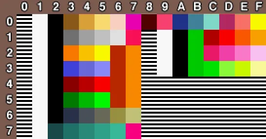
Please forgive the compression of each color tile- websites like substack have a habit of “helping” images
by applying a compression algorithm that works well for photos of things, but terrible for colors. What is
modern society if not a series of knobs we’re not allowed to adjust? Ah well.
So how does this chart work? In Super Mario World, every sprite tile can only use colors from *one* row.
That way, when a programmer wants to draw a tile, it only needs to keep track of a number (9-16 more or
less, 8-F on the chart) for a row, and then a number (1-16 more or less, 0-F on the chart) to pick a color
for each pixel on the tile. Let's forget about Roy and Morton for a bit to break down generally what each
group of rows are for.
Some of you who were paying attention may have caught the first contradiction- didn't I say a tile could
only use 8 colors? There are 16 in a row! Mario World chooses to only use 8 for reasons we'll guess at
later; I mention this now because we need to talk about the exception to the rule: The Plumber.
Row 1
 I am aware this sprite is slightly wrong. I promise I will explain. I really promise.
Beautiful. Sprite rip credit to Barrack Obama. I promise I will explain and that isn’t a joke
I am aware this sprite is slightly wrong. I promise I will explain. I really promise.
Beautiful. Sprite rip credit to Barrack Obama. I promise I will explain and that isn’t a joke
Look at him. Count the colors: 3 maroon, 3 blue, 4 skin tones, 1 black, 1 white, 1 transparent. That's 12!
12 is bigger than 8, so you need to use a whole row, which is what they did- The Player's Sprite is always
drawn from Row 0.

The other colors are for Mario's fireballs and the pink and his occasionally rosy cheeks. (Peach also uses
this palette, so the pink does some heavy lifting)
To be clear- Mario isn't "claiming Row 0"- it's not his, and he didn't make it. Row 0 is ALSO used by the
moles, the catctus-kin Pookeys, those weird toothpicks that move up and down- anything skin colored.
Because of Mario (or green “mario”)’s Omnipresence, Row 0 is always locked in. It *does* change if you
switch to green “mario”, or grab a fire flower as either brother- but don't expect the game to try and
change Row 8 to squeeze in some new colors to a level or something frivolous.
From here on out, every tile is only going to use 8 colors of each row- IE Half. Let's figure out each row's
use.
ROW 1:

The FIRST half is therefore used for common stage elements such as bullet bills, bobombs, and the bone guys
and never gets switched out. I ORIGINALLY thought fire flowers use the back half, but those are actually
used by the red berries Yoshi can eat. Thanks to twitter user @ Spacesandwhich_ who was kind enough to
correct me in this post!
ROWS 2-5:

Okay, for now let's only look at the first half. Why is there 2 tones of orange for every row? I get why
they need black, white, and transparent, but why do these rows really only differ by THREE colors? Consider
the following enemies:
 For the Record, Barrack Obama is the username of the sprite ripper at Spriter’s Resource. Thanks, Obama
For the Record, Barrack Obama is the username of the sprite ripper at Spriter’s Resource. Thanks, Obama
Now, space is tight on a cartridge. Do you want to save 4 images of a turtle, or do you want to save 1 and
change a SINGLE number (the row number) to change whether you get a red or a blue turtle? These are the
exciting choices a career in game dev presents you. This explains why the shades of Orange or the same- they
don't change between any of the different color turtles! I also have news about Rows 2-5: they aren't going
anywhere either. Why? Consider:
 Yeah, I liked it better when his arms were orange. Sure, they didn't look like arms, but they read much
nicer across his body!
Now Available in 4 colors
Yeah, I liked it better when his arms were orange. Sure, they didn't look like arms, but they read much
nicer across his body!
Now Available in 4 colors
You can take this lovable tired boy into every stage. Knowing this, basically every enemy tries to take
colors from Row 2-5, Oh- that's why those crayola colors are everywhere! To be honest, I also think this is
why they opted for 8 colors per tile, rather than the full 16- it's easier to be consistent about smart
palette use when you only have 8 (really 5) colors to be concerned about. But don't worry. They're going to
also put useful colors on the back half of Row 2-5 so other sprites can use some cooler colors, right?
Hey remember the berries Yoshi can eat? Not the Red one, that one is colored using row 1- I'm talking about
the pink ones that also show up for added flavor, and the green ones that appear in literally ONE Stage.
Those are the only objects that use the back half of Rows A and B. The remaining back half rows are blank. I
guess they didn't want to think about what they would most commonly need, and lock themselves into a corner
later? That's not too bad of a thought.
Hey, how many rows do we have left?
Just two?
We Ate All the Pizza so You Can Eat Dirt
Rows E and F are the only 2 "free" rows that can be changed out for unique sprite colors. A friendly data
miner found that these are the only options that end up getting used in these rows:
 Pay attention to that last one....
If you’re bored, try and guess which enemies use what palettes! Also this image is courtesy of
Kamekthemagickoopa on deviant art here. They said no credit necessary, but I guess I like giving credit
anyways!
Pay attention to that last one....
If you’re bored, try and guess which enemies use what palettes! Also this image is courtesy of
Kamekthemagickoopa on deviant art here. They said no credit necessary, but I guess I like giving credit
anyways!
I thumbed through every level to confirm that yes, for some reason Rows E and F DO come in pairs, always.
They are mostly all used- Numbering them left to right, the first one is the default choice. It's used for
those cute dinos that breathe fire! The second is for buzzy beetles and wait a goddamn minute
THERE IT IS! That first row is also used for buzzy beetles, but the "grey Koopa" row is used only for ROY in
the credits and would look really good on MORTON instead! So maybe they just were off by one when calling
the right row to color Roy AND Morton. Wait- why use that palette at all? We want ONE of them to be pink,
right? Why not make a new palette? If we look back at the possible "wildcard" Palettes, number 6 isn't even
used anywhere in the game! Literally ever! They could have just made a grey and pink Koopa palette?
Okay wait, look up at the list of palettes again: they DID make a pink Koopa palette! Twice! Number 2 is
mostly used for castles (the first row is for bone fish. trust me) while number 8 is used for bowser. BINGO!
So Pink Koopa WAS loaded into memory, ready for its correct recipient, Roy! So why did they mess up so bad
still? How did *BLUE* even get in there?
In 2018 there was giant leak of Nintendo's internal servers which contained data for many beta elements of
games, including Mario World. Here are the earliest known sprites of the Koopalings, dated 1989 and 1990
respectively:
 Look at em dance!
Yes, Iggy and Wendy had completely different boss fights very late into development
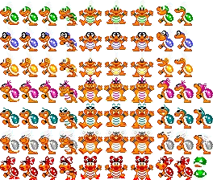
Images here courtesy of The Cutting Room Floor . net
Look at em dance!
Yes, Iggy and Wendy had completely different boss fights very late into development
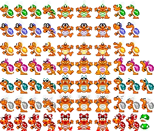
Images here courtesy of The Cutting Room Floor . net
This muddies the waters even further. Why were Roy and Morton the wrong colors, but not the ones in the
credits? And also wait what's up with Ludwig? Why is he grey now? Wait
Oh you're kidding me

You mean this entire time HE WAS PINK INSTEAD OF YELLOW?????
Putting it all together
So you might have put it all together- the reason that pink, navy, and grey Koopa palettes are loaded on
this credits screen (they do write over Rows 8 and 9 for the Koopa kids cast roll, I think) is because their
beta sprites were colored that way- BECAUSE the Koopalings were those colors in Mario 3 (mostly). The
mistake of switching Roy and Morton's colors must have been made by confused artists/programmers and was
preserved through nearly every step of development until the final release.
In case you’re wondering who: we can’t know for sure, but here are the suspects:
1. Shigefumi Hino: the God of Pikmin, and Yoshi’s Dad, he was the teams credited Character Graphic Designer.
2. Eiji Noto or Satoru Takahata. They’re both credited as “Area Data Programmers.” This is to say they were
level designers, but this required technical know how, and it’s clear from their continued to careers they
were have specialize in VERY heavy lifting programming (Noto was the lead programmer for NSMB) or UI
Programming (what Takahata sticks to generally). I rule out Yoshihiro Nomoto because they exited the games
industry after Yoshi’s Story and were nearly consistently a heavy lifter on level design. I might be wrong,
but I have to take some guesses.
3. Kazuaki Morita, the object programmer. This meant he programmed and dictated the behaviors of all objects
(tiles, enemies, bosses- Mario excepted as he’s given a separate credit) and therefore *could* have been
responsible for their animations and therefore color palettes. It would make sense to make these sort of
mistakes- its clear from his future pedigree (he was the programming supervisor for Breath of the Wild!)
that he feels the most comfortable strictly programming enemy behaviors.
4. Toshihiko Nakago, the Program Director. Technically, he’s in charge so everything would be his fault. Sure
wish I could call these people up and ask who is responsible for me getting lost down this well!
I'm going to have to speculate a bit about the order of events, but these are informed guesses: It has been
documented that Mario World began as a Mario 3 port, so the Koopalings’ colors were probably carried over
from there. Here is where the first mistake happened: They got Roy and Morton's colors swapped. This went
unnoticed. Originally, all the Koopa children had more similar boss fights. This keeps true until some point
in late 1990.
At some later point, they changed the boss fights. Wendy and Lemmy get new sprites for their final version
battles, while Iggy and Larry get new sprites (throwing a ball from their shell) for their boss stages.
Morton and Roy don't need any new sprites for their simple boss fight, (they run up a wall and then try and
jump on you while making a goofy face, pictured below), and perhaps Ludwig could have been the original
template for the fight.
 They should have kept the eyebrows
They should have kept the eyebrows
It is at this stage that 2 things happen:
1. Art is given a final pass. BY THIS POINT, the credits sequence MUST have been hardcoded already, and on
that screen the 3 Koopalings in question (Morton, Roy, and Ludwig) had their (albeit incorrect) BETA Colors.
2. Soon after, they decided to get fancy and use mode 7 (a fancy rendering technique that makes sprites
squash and stretch). Mode 7 messes with color palettes in strange ways, as colors are stored entirely
differently. We have seen that the Mario World team struggle to efficiently use color palettes already, so
it’s safe to assume this is when they decided to switch Roy, Morton and Ludwig from weird, unique colors to
standard Koopa colors (Green, Red, Yellow, or Blue).
Either nobody told the Credits programmer to change the Koopalings to match, or they wanted the credits to
reflect what the Koopalings *should* have looked like. Either notion is respectable.
We're going to fast forward to weeks before they print the game. Miyamoto, brain perhaps momentarily
reprieved from the divine inspiration delivered from his wife, walks into the room to watch the credits of
Super Mario World.
"What the hell is that!" Shigeru Cries. A dazed programmer asks him what he means. He tersely responds:
"ROY IS SUPPOSED TO BE PINK, MORTON IS SUPPOSED TO BE GREY, AND LUDWIG IS SUPPOSED TO BE NAVY. SWAP THEIR
PALETTES AND FIX THIS."
Worried about their bonus, the programmer realizes the two things they need to do in order to save their
skin:
1. Switch Roy and Ludwig’s colors.
2. Switch Roy and Morton’s colors.
Now I have a question for you, my loyal reader: Does the order of these steps matter? Unfortunately for me,
you, and this mystery programmer, it does. They needed to do it in the order outlined above, but it seems
like they did it in reverse. Here is what happens in each case:
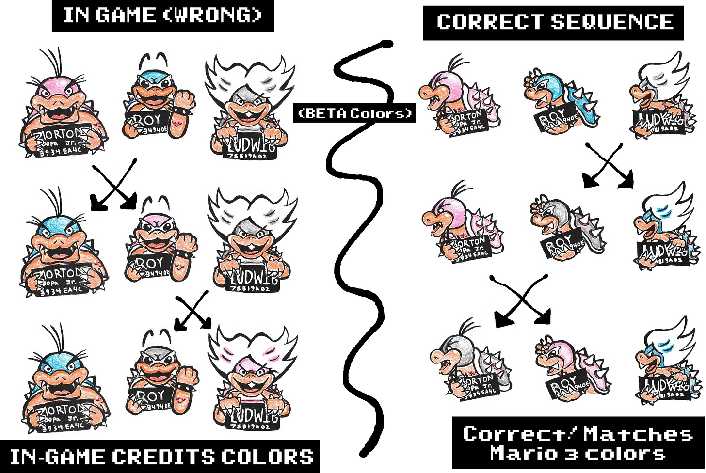
And here is, of course, what the final credits scene looks like, as well as a mockup:
 It's like a reptilian burden has been lifted from shoulders. er, shell
It's like a reptilian burden has been lifted from shoulders. er, shell
We have our answer.
The above mockup was meticulously picked over to make sure such a thing could exist. I used Barack Obama's
excellently detailed rip of the Koopaling sprites and using gathered palette info I meticulously recolored
both the ending screen sprites. I Then compared my hypothetical mockup to the color values of the edited
ending screen and...
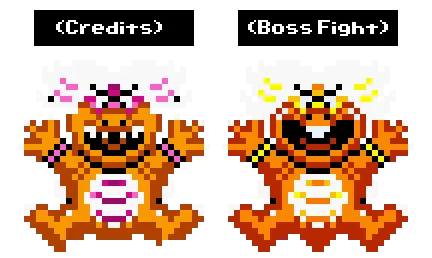
Sprites on the right is edited, but sourced by Barrack Obama. Thanks again.
Wait. Ew. What's going on with Ludwig. What?
Veneer, singular
So what's going on? This some kind of beta sprite for Ludwig maybe? No! But I'll save you the work of
playing all the way through Doughnut Plains to see Morton's front facing sprite in action:

So, how did Morton’s Maw end up on Ludwig? And only his Teeth??? And why doesn't Morton or Roy have Ludwig’s
missing, singular tooth?
Currently, the date is November of 2023, which means those of you only familiar with modern game development
are wondering how such a mistake could happen. You might see Ludwig and think of him as one, SINGULAR Hunky
turtle. The reality is that Ludwig is in Shambles:
 The Shattered Visage of a Turtle
The Shattered Visage of a Turtle
Even more metaphysically, Ludwig’s body shares a plane with his confused twins, Morton and Roy. At least now
we know why specifically these triplets had their palettes swapped! So, what even *is* going on here? Like
what are all the parts here?
Let us refer back to the classic game dev dilemma of turtle pictures: If you have 3 images of a turtle, and
the only difference was that each one sported a different silly hat, would you, dear reader, opt to store 3,
full bodied portraits of haberdashed reptiles? Or would you store 1 turtley image and 3 sporting caps?
Knowing your answer, I'm going to compare the standing sprites of Ludwig, Morton, and Roy:
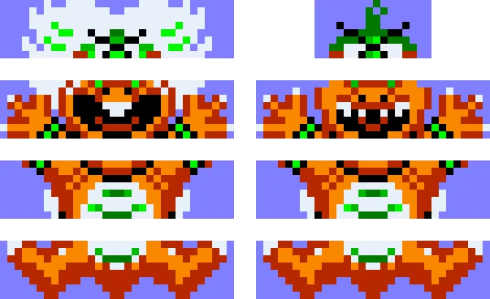
A lesser author would write here "to shreds, you say" but I'm built different: The blue here is the same
blue Barrack Obama used for transparent values. You can see how with some settings left on mindlessly, how
the white might be close enough to this calm, powder blue to ALSO be marked as transparent and carry a
slight amount of the color of (not pictured here) hyper sky blue background of the sprite rip!
The Blue is the transparent pixels- they’re normally see-through.
If you think about it, a torso is a funny kind of hat. Their bottom halves are otherwise identical to each
other! We can follow that, but in order for them to have drawn the wrong teeth they'd have to be essentially
playing Battleship on a big sprite sheet literally every time they need to draw a sprite. Is that really how
the Super Nintendo draws things, by listening for a bunch of numbers to be shouted battleship style?
You Sunk my Tooth In Hexadecimal
When you're looking at my 3rd-favorite-child Ludwig's forward-facing sprite, you are actually looking at a
4x4 collection of 16 different sprites, each of which are 8x8 pixel tiles, which select from 8 different
color values in Mario World. You don't need to understand that, I'm saying it so nobody says I'm attempting
to simplify. Now let me attempt to simplify.
Basically, there are both memory and storage reasons to only store sprites in tiles made up of 8x8 pixel
sprites. You don't need to know these reasons. *I* don't need to know those reasons. What it does mean, is
that we are able to break chunks up, and build sprites smart so that way we can re-use entire body parts for
some of the 7 Koopa children. In the deepest pocket of your cynical heart, you already knew this to be true:
If you're going to re-use boss fights, you might as well use similar sprites!
But Okay, HOW are they drawing these sprites on the screen?
No. I'm not going to explain how Mario World draws everything on the screen because then I would have to
explain where code actually lives in Mario World, how it draws tiles every frame and updates them based on
code processes going on. I only need you to understand how a programmer would want to draw *this* screen:
 Every time I’ve posted this image, I have made one small, diabolical change.
Every time I’ve posted this image, I have made one small, diabolical change.
For context, none of these guys are moving. They're all Police Squad Style Freeze Frames that are drawn, and
then undrawn as the screen transitions. Let's start with drawing one turtle kin on this screen and focus on
that, since drawing one turtle is basically the same as drawing 7. Let's refer back to the 4th worst turtle
child, Ludwig!
As we said already, we got 16 tiles we need to draw. What do we need to tell the computer in order to draw
Ludwig exactly right? The way I (and also Mario World) Figures, you need to know:
1. It's X position on the screen
2. It's Y position on the screen
3. Which Battleship coordinate for Which Tile to draw
4. HOW to draw it, facing which way, Which Color?
You can represent this data as 4 different numbers. That seems really weird, but I'll explain how they work
that magic in a bit. Let's go in depth for these categories:
1. The X Position number
The X Position on screen is stored by a single bit. As a refresher, a bit is 8 digits of binary (1's and 0's
only) which is an idiotic (but technically simple) method of counting.
It's worth going into Binary, to be honest, and it won’t take too long. You know how you count
"0,1,2,3,4,5,6,7,8,9," and then you stop making up numbers and go "10,11,12,13,14,15,16,17,18,19," before
continuing to "20,21,22," and so on? What if we had.... less numbers? Like what if we went only up to 5
before getting to 10, and then 11? It would look like this:
"0,1,2,3,4,5,10,11,12,13,14,15,20"
Don't ask why. That's not a helpful question, nor will it be for binary. Just use that example to kind of
figure out *how* we count in our regular number system, which is called decimal (you get ten, deci, digits
including the 0). Okay, so what if we wanted to use literally, only 2 digits? What would counting look like
in this binary system? Well,
"0,1,10,11,100,101,110,111,1000,1001,"
And so on. It's tough to read because the lengths keep changing. Lets fix that.
"0000 0000, 0000 0001, 0000 0010, 0000 0011"
And so on. Yes, that's only slightly better, and it takes longer to write out, but it is a bit easier to see
how many numbers there are! Why did I Choose 8 places to display? It's what the computers choose to store.
Just trust me on that. Why did I break each number in half with a space? Why do you put commas whenever you
write 1,000,000? Makes it easier to read, right?
And like, what does that translate to real numbers? Well to satiate your curiosity:
0000 0001 = 1
0000 0010 = 2
0000 0100 = 4
0000 1000 = 8
0001 0000 = 16
0010 0000 = 32
0100 0000 = 64
1000 0000 = 128
1111 1111 = 255
So if you count 0, you have 256 different values that can be represented with 8 digits of binary. If you
have been around computers, that number should sound pretty familiar!
We'll come back to binary later, when we actually need it. Just know that Mario World Takes some 8 digit
binary value, and uses some value from 0-255 to determine where on the X axis to place a tile.
2. The Y Position Number
The Y axis is stored in the same way. Yet another 8 digit binary number to use in some magical way. Wait-
are you telling me that a programmer in 1990 had to just... write out a big binary number? Well, no, that
would be nonsense. I feel idiotic having to write as much binary as I just did. Hell, you already know how
to write binary in a much shorter way: Using actual, real people numbers. Why write 1111 1111 when you could
write 255 instead?
What? You're saying a programmer would write it as FF? Excuse me????
Let's go back to counting, for fun, again. Remember how we count using TEN digits before we loop around
again, like "0,1,2,3,4,5,6,7,8,9"?
What if we wanted *more* digits? Wouldn't we have to literally invent a new number?
Want to learn about this subject in the most confounding way possible? School House Rock has you covered.
(click)
I'm serious. They covered this topic accidentally while attempting to teach children how to multiply by
twelve. Why? Why do this? Ms. Quintero fast forwarded thru this song when the VHS arrived at this number- a
certified educator determined this lesson to be harmful to children!
Regardless of your own viewership: rather than invent some weird numbers like deck or el or some other
fanciful invention, why not just use letters? Basically, if we wanted just ONE more digit, we could count
"0,1,2,3,4,5,6,7,8,9,A" before reaching "10,11,12,13,14,15,16,17,18,19,1A" and so on.
What if we had... 16 digits? As in, we had a magical system where 10 (in regular, decimal) = 16 (in our new
system, called maybe, Hexadecimal)?
"0,1,2,3,4,5,6,7,8,9,A,B,C,D,E,F"
So what are some useful values to know then? Well, let me satiate your curiosity: (numbers with $ in front
of them are in Hexadecimal, for clarity)
$01 = 1
$0A = 10
$0F = 15
$10 = 16
$A0 = 160
$F0 = 240
$FF = 255 wait a sec
So… that means $FF (hexadecimal) = 1111 1111 (binary)? Yep! It means Computer Programmers only need to write
2 digits in HEXADECIMAL to write 8 digits of binary. Do you need to be fluent in it? Nope! Just thought you
should know that programmers are NOT having to type in 8 digits of binary whenever they are coding!
3. The WHAT to Draw Number
The Third Number Mario World needs is the ID of the tile, and what page to find that tile on. Wait, isn't
that two numbers? Yes they are! But if we're drawing a lot of tiles from the list (and a single turtle kin
can be SIXTEEN Tiles) then it makes sense to declare the page number ONCE at the top of the list, and then
list the other, actually changing numbers immediately after. Just trust me on that. Don’t think about it!
Picture the Super Nintendo as a room full of different tables where everyone at the tables are doing
different tasks. When they finish, they shout a number, and their manager takes their number and delivers it
to a NEW table that uses that number to do something else. In our example, we have one table who figures out
which tile to draw from a grid (pictured below), shouts out a number 0-255, and that number gets passed to
an artist at the artist table who knows how to draw any tile from any number they're given, as long as
someone remembered to tell them what page to draw from earlier.
 Be honest. It took you a while to look for the right teeth, huh?
Be honest. It took you a while to look for the right teeth, huh?
At most, we have 256 different numbers you can get in binary using 8 digits. But what the hell does that
actually mean? A computer program at this level of complexity is a bunch of people doing weird little math
tasks and screaming at the top of their lungs, "157!!!!" and their middle manager knowing that somehow their
subordinate is telling them a page number and tile number to tell the artists table to draw???? How does
that work?
And seriously, WHY are we even bothering with binary? Isn't that extremely cumbersome?
Please imagine computers functioning like the picture below:

Yes, in a sense, computers did and currently function like this. The way they "store" "numbers" is nothing
more than illusion- we often explain these things backwards because they're faster to explain that way. I am
sorry for taking so long to connect all the dots, but you truly should now know the bigger picture of why we
use binary numbers in computing AND have already understood why a programmer would want to shorten it to
Hexadecimal when writing it out.
What you really need to know: Mario World, when drawing the 7 Koopa kids in the credits, is essentially
shouting out a list of numbers for a digital artist to interpret as instructions. It first shouts out a
bunch of numbers that give more or less what pages artists should draw off of, and then it tells them, tile
by tile, a set of 4 different numbers. The first two numbers are the x and y position (like battleship) of
WHERE to draw, and then a single number that tells the artist WHAT to draw, IE, which tile on the page
(pictured below) to draw.
 As you may have noticed, the default is to have all sprites face left by default. Makes sense in that most
things stand opposite of Mario, and he faces right most of the time!
The X’s are unused btw. Also, the smaller shells at the bottom of the image are unused- you might guess why
later!
As you may have noticed, the default is to have all sprites face left by default. Makes sense in that most
things stand opposite of Mario, and he faces right most of the time!
The X’s are unused btw. Also, the smaller shells at the bottom of the image are unused- you might guess why
later!
And this, as you may have caught on, is where the mistake would have been made. The wrong number was pointed
out- It was clearly a mistake that was made in earnest, and not a typo! If you look at the credits sprite of
Ludwig once again, you can see they DID successfully yell out numbers that point to teeth! They just picked
the wrong ones!
Of course, we still have the 4th number. It tells the artist HOW to draw it (as far as rotation, priority,
color, etc.) but we don't need to know that for now, so will move on.
tartaruga vitruviano
So now we know the bug and can explain it properly. I will remind you that Ludwig and Morton, actually look
like this:
 I am a bit worried that If you showed only the pictures, a chunk of the article would disappear, but I like
to think we learned good, useful things along the way.
I am a bit worried that If you showed only the pictures, a chunk of the article would disappear, but I like
to think we learned good, useful things along the way.
And that if we arrange it into rows (as pictured above), we may see a possible pattern emerge: It looks like
the lower halves of Ludwig and Morton Jumping (and of course, Roy as well) are all Identical drawings! They
get colored differently sure, but that's beside the point! They must have thought that the bottom THREE rows
were the same, and that the TOP row (the eyes and hair) was the only thing different between the 3 reptilian
brethren. It is, once again, understandable looking at a jumbled image that they yelled out the numbers for
Morton’s hands and mouth rather than Ludwig’s. Look at the chart below and YOU tell me how quickly you find
the right teeth and hands for each of the 3 turtles!
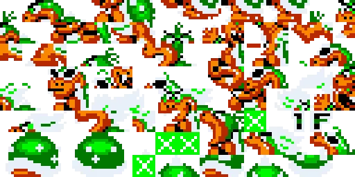
Last time I post broken turtle, I promise.
And now you know for sure exactly how they did it. Below is another set of mockups.
Another oddity: Roy is missing his fabulous eyebrows. they basically forgot Roy even has a row of tiles
above his face. They would never be seen again.
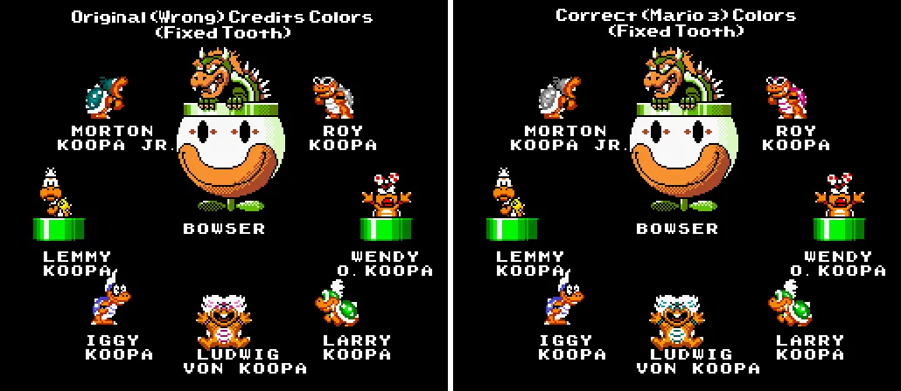
Okay, I’ll Admit, I was lying when I said I was making small edits to each instance of this image. Sue me.
Before we conclude, I'd like to clarify 2, unlikely but possible lingering thoughts of yours.
First, you might disagree and say “BUB, the beta colors for the Koopalings were NEVER meant to be loaded in
to the actual boss battles themselves! The Koopalings should have been the actual colors they were in the
game!” OR, you might be like a 12 year old me, who asked "well if ROY is supposed to be pink, why on earth
didn't they just let him be RED and make Morton Blue since that's sort of like gray, moreso than Green is?"
These are specific thoughts, but I made mockups for you:
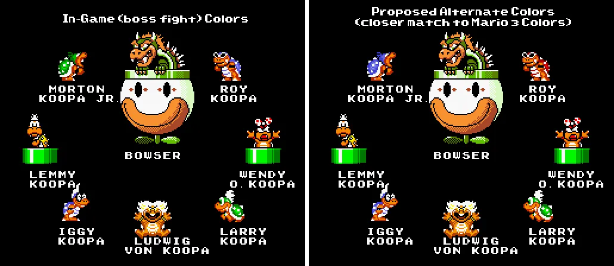
Seeing it now, I don’t think Red works for Roy- It looks muddy when given a 3 tone rich shading style! The
first mockup, while equally valid in approach, is perhaps the most untruthful of all of them: It was always
possible for the beta colors to show up in Mario World during the boss fights. In fact, the only previous
hacking and research regarding the Koopaling sprites was done to restore Morton, Roy, and Ludwig battles to
their beta colors, as well as their (incorrect) original cast roll colors.
Perhaps your final lingering thought: Why hasn’t anyone discovered these exact oddities in the code? Am I
literally the first and only person to have cared? I know this is a lingering thought because Vidyasaur
asked me literally 4 different times during my quest this exact question. I can say after a thorough
research that yes, I am literally the first person to pose this exact question and get an exact answer. That
means nobody has made a patch fixing this sort of thing, nor has anyone successfully edited the cast roll of
Mario World.
I'm going to stop you right there, because yes, a total Hack would end this article right here by saying
"until now," Drop the patch, and sign off with donation basket in hand. Like comment subscribe BYEEEEE but I
am not that kind of (albeit talented) hack. I don't know anything about 16-bit assembly (what Mario world is
programmed in) and until now I did not understand the relationship between hexadecimal and binary. So no, I
do not have the skills, time, or dedication to absorb the necessary know-how for a simple task that nobody
cares about.
That's why nobody has done it by the way: Nobody cares. Mario World hackers have found a smarter and cooler
way to roll custom credits- create a custom level that displays the credits text automatically! So why go to
the effort of documenting and coding (in assembly!) a whole new set of enemy cast list credits just to show
off a new enemy that was in your hack? The OG Cast roll is already full of errors and omissions (fuzzies
don't even make the cut). Who cares?
Evidently, someone in the early 2010's did. The only documented attempt on SMW Central (as the name implies,
the center for Mario World hacking) to edit the Koopalings (and a couple of other beta related color palette
mistakes such as Chargin Chucks being blue and the dry bones being icy fish colored) as a sort of "Mario
World Remastered." This inquiry was met with comments of "maybe you should try making levels first, that
will get people to actually play your hack", which the OP responded with "no I want to do this. and only
this." In turn, more users and some then prominent members of the forum dogpiled the OP for being an
obtrusive idiot who should instead spend some time learning the basics and making simple hacks following
tutorials before asking questions. Eventually, an owner of the forum called the dog-pilers children after
the damage had been done, and the OP had failed to bump their own thread.
In other words, nobody has Fixed the Koopalings in the credits because the people who COULD don't care- they
bypass the cast roll altogether. So while I would be able to put on my discord profile that I was the "first
person to fix the Koopalings in the credits of Mario World" (which would go nicely with me being the actual
world record holder for the most illustrations of the Floigan Brothers), I would have to know enough 16 bit
SNES assembly to lightly read a decompilation of Mario World's Code, find the table that contains the
instructions on WHERE, WHAT, and HOW to draw the Koopalings in the credits, and then change their binary
values in such a way where Morton was drawn Grey, Roy was Drawn Pink, and Ludwig was drawn Navy AND with
different sprites for his arms and Tooth- which to be fair, I DO know how to write binary that is understood
by the SNES now, and I DO know how to write those values as hexadecimal, and if I knew WHERE those values
lived I COULD simply rewrite those numbers and
Click here to download the patch.
To apply it, please use a program like FLIPS and apply this patch to a clean ROM of Mario World. No, I am
not providing it for you.
As of the publishing of this patch, I have spent 4 days straight learning 16 bit assembly and pouring over
the Mario World Codebase. I have done it. I'm going to tell you my story, and if you stick with me, you’ll
understand how I did it. This may be more technical information than you're willing to learn. Maybe you need
to take a break and come back later- That's okay! Here's the subscribe button and thank you for reading this
far. I promise when I wrote out that bit about how a Hack would end their article this way, I did not intend
on actually doing it, but I made the mistake of handing myself a ball of yarn.
Share Grim In Pink
Seriously, thank you for making it this far. I do a lot of deep dives on everything I love so if you do want
to see more of that, sub!
Now, let us continue. It's down the technical hole form here.
I Will Admit, I Have a (non-turtle) Problem
I mentioned this earlier, but you shouldn't give me a ball of yarn- I will not stop until it is untangled
and re-spooled. I don't think this is a good or charming or even useful attribute to have. I hesitate to
call myself obsessive, but I spent 4 days straight learning 16 bit assembly from zip until I could identify
37 numbers from a crowd of 1800 at a glance. I struggle to walk away from a subject until I have an earned
and thorough understanding (or an exact scope of what I don't). This is bad for learning- you do in fact
need to walk away from things to acquire any sort of nuanced and multi-faceted understanding of literally
anything. I am fortunate my obsessive tendencies push me in the direction of a thorough understanding, which
is more a result of other personality aspects: I will always ask for others help, and I will NEVER expect
myself to be good at literally anything.
The first thing I did was to look for help- while I wanted to try and solve the problem myself (because I
was doing this for fun), it would be idiotic to ignore a robust hacking community which has existed for
several decades. I made a Mario World Central forum account and joined the discord. Before I asked a
question, I noticed another newer user asking a question, so I waited for their question to be answered-
they wanted to make some custom powerups. This inquiry was met with comments of "maybe you should try making
levels first, you may learn something, and others will want to actually play your hack” which the OP
responded with "no I want to do this. and only this." In turn, more users and some then prominent members of
the discord dogpiled the OP for being an obtrusive idiot who should instead spend some time learning the
basics and making simple hacks following tutorials before asking questions. Eventually, an owner of the
discord a day later indirectly called the dog-pilers children after the damage had been done.
The only real help I received from the SMWCentral discord was finding a program used to apply edits to hex
values in Mario World's code, and a helpful explanation about what command to use followed by a
mansplanation about the different terms for length assignments. To be fair, even though I tried to be clear
about exactly what I was asking, maybe they just were trying to predict further questions and had traded in
politeness for their newfound clairvoyance.
Who did help me was Fantastic Fox (some of her cool stuff is here, or play her Mario World ROM Hack!). She
is a lifesaver. I happened to be catching up on an actual GOOD discord I hang in (the only one I hang around
in, do not find me whoever you people are) in the dedicated Mario channel. I happen to catch an infrequent
poster posting progress pics of her Mario world hack- this was my chance to ask questions with HELPFUL
answers! She is the one who provided me with the excellent PDF tutorial on SNES 16 bit assembly, as well as
the decompilation of Mario world's code (written by Ersanio).
The final thing Fantastic Fox would point me towards is the SMW central ROM and RAM Maps- these are
databases on every individual address Mario World calls in its code, with varying levels of documentation.
While the Koopalings sprite data is not identified by each individual turtle sibling and the credits
enemy-rendering code is not commented, the general location of the relevant code was documented and without
this information I would have spent hours searching in the dark for the right table.
Before I show you what a turtle *really* looks like to a Super Nintendo, we have some unfinished business:
Spinnin' the Turtle till it Looks Pretty
Let’s remember how the Super Nintendo draws tiles on a screen: you have workers at a table who shout out
numbers for an artist to interpret as instructions- first the worker shouts the page number and some general
info, and then they shout out a list of numbers, 4 per tile, that tell the artist:
1. The X Position
2. And the Y Position, IE WHERE to draw,
3. The Tile Number, IE WHAT To draw,
And finally,
4. The Orientation, Layer (whether it goes in front or behind other things), Colors to Use, and a Light
Reminder of the Page Number, IE, HOW to draw.
Perhaps you've noticed that the 4th number is somehow, 4 different numbers. What on earth is going on?
And no really, why on earth do I write EIGHT digits of binary for a single "number?"
I know in this analogy I have been referring to workers at tables shouting numbers at each other, but this
would be problematic if we were to do this in real life. People would be shouting numbers all over the
building all the time, and nobody would know who is shouting at who. Fortunately, computers are built
smarter at that, and you don't hear hundreds of worker bees shouting in your SNES controller when you turn
the game on. Instead, when I say “an artist is at their table waiting to receive 4 different numbers for
their instructions”, what I mean is that they have 4 different sets of 8 lightbulbs which turn on to tell
them EXACTLY what to do in nice, readable binary numbers (which the artist is very good at reading, up to 8
bulbs at a time).
In fact, here is their desk:
 The person drawn here is nobody in particular, since they are meant to represent the SNES itself, not any
particular artist.
The person drawn here is nobody in particular, since they are meant to represent the SNES itself, not any
particular artist.
So... how does the HOW number (represented by 8 light bulbs) represent 4 different numbers in one? Simple!
Here's how that number looks on the artist’s desk:

Basically, you have a 1 one digit binary, another 1 digit binary, a 2 digit binary number, a 3 digit binary,
and a final 1 digit binary. Add that up, and you get 8 digits (bulbs).
Lets break that down in detail.
1. The "Y Flip"- 1 digit, number 0-1. If its on, it means mirror the tile upside-down.
2. The "X Flip"- 1 digit, number 0-1. If its on, it means mirror the tile left to right.
3. the "PP" number- 2 digit, number 0-3. Tells you what Layer number it's on, whether that’s foreground,
background, main, or SUPER, in front of everything all the time.
4. the "CCC" Number- 3 digit, number 0-7. Tells you what color palette of 8 to use to color the tile.
5. the "N" Number- 1 digit, number 0-1. I have no earthly idea, but it has something to do with the page
number. I don't need to know this so neither do you. Please explain it to me if you know!
In case it wasn't clear, I did not figure this part out by myself. A guide written by MarioFanGamer, while
extremely dense, intimidating, and purposefully made NOT for beginners (although informative), gave me this
information.
This is why we ALWAYS write out binary numbers (even ones as silly as 00000001) as 8 digits- The game tries
to use as much of those lightbulbs as it can!)
You've been such a trooper so far. We're almost done digging into the details of binary- the next time will
be the last, I swear. To review: the code is shouting some numbers which declare some sort of numbers to
give out general info, followed by a list of numbers, 4 per tile. These 4 describe: The X position, the Y
position, WHAT to draw, and HOW to draw it. If you remember the screen with all the Koopalings (and PaPA
Bowser) on it, you may notice that there are a lot of tiles to draw, so the game keeps all of the numbers it
needs to shout in a big table.
And Now, an Atomic Glimpse at the Mario World
Normally, small tables act as banks of numbers that represent drawing instructions for the SNES- I wouldn’t
know this personally, as I can tell you that all the freeze-frame enemies in the cast roll are stored in one
GIANT table, pictured below.


 Look on ye mighty works and despair
Look on ye mighty works and despair
In addition, you have an entirely separate table that acts as a sort of "table of contents" for this giant
table- how it works (and this is why I needed to learn a decent chunk change of SNES assembly) is that when
a slide of the cast roll is done displaying, a number is shouted which increases a "slide number" value.
Once this number is high enough, the code loops back to the top of itself, picking up where it left off by
using its new table of contents number (called an index). The Koopalings are the final slide of the cast
roll (the page with the Brothers and Peach are handled by a whole other code), so they're at the bottom of
their table. Here is approximately where they live:
 Somewhere, Seven Koopa Hotel owners live…
Somewhere, Seven Koopa Hotel owners live…
Okay that’s a lot of numbers. I need to remind you, these numbers (with dollar signs in front of them, like
so $0A) are hexadecimal numbers, which are a MUCH shorter way to write binary numbers. We COULD write out
those numbers as binary numbers instead for the whole table, but I would ask you kindly to do it if you want
to so bad.
Confession time. I did not learn enough 16 bit assembly to perfectly understand the code that parses the big
table. Nor do I have a broader understanding of Mario World's Architecture to know what each number in that
table even *is*. Sure, I know the 4 numbers are in there and I know they definitely are fed into the magic
tile drawing machine one after the other, but it’s clear that other unknown numbers are shouted before AND
after each group of sprites. I cracked my head at the code for 3 days only to come up close.
So like nearly every math problem on a test I have ever faced, I am going to have accept that I got 80% of
the work done and figure out a way to *smartly* brute force it. It would help to remember what it is I'm
looking for.
A Tooth and Some Skin in a Haystack
So here is the haystack:
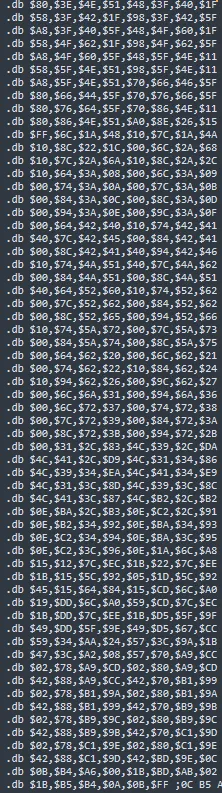
And here is what I'm looking for:
The "HOW to draw numbers" for Ludwig, Morton, and Roy So I can swap their colors around. There are:
-16 for Ludwig's Color
-9 For Morton's Color
-8 For Roy's Color
and the "WHAT to draw" For Ludwig, specifically:
-the 4 tiles for ONLY his arms and teeth
That’s a total of 33 numbers we're looking for. Keep In mind there are 4 other Koopa kids and 1 HUGE Bowser
whom I do not care about in this haystack, and I can't at a glance figure out what numbers belong to who
without manually changing random ones and seeing what happens. That's honestly a fine but terrible (and
boring) way to approach the task, so let’s try and outsmart it instead.
Let's focus on finding the "HOW to draw” numbers first, as editing them is going to be a lot easier. Why?
Because I mostly understand them. Let's look at the format for those again:
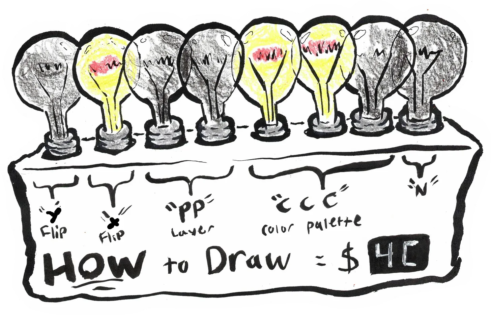
We can look at Ludwig's Sprite and try and guess what his "HOW to draw" number will be, since the format is
so easy to plug in values to. I'm going to attempt to find Ludwig’s sprite as (and I swear I'm not lying) I
felt like it might be easiest to find him, although I wasn't sure why.
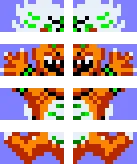
I was also getting delerious staring at his teeth for this long, tbh
He’s 16 tiles, not 8, but I figured this would be the most clear way to illustrate my point.
Y: Always 0. This is true for everything on the Koopalings credit screen- none of them are upside down.
X: Either 0 or 1. Ludwig's sprite is mirrored when split in half down the middle, and as we all know, it’s
good habit to minimize the quantity of turtle pictures on your cartridge. At the time, I don't know if they
draw sprites either top to bottom or left to right (or if they're grouped by character at all) so I can't
yet make any broader assumptions until I notice a pattern.
PP: Hell if I know. could be anything from 00, 01, 10, or 11. I'm at least pretty sure all the Koopa kids
are on the same layer, whatever they are.
CCC: This determines the palette, so let’s look at a sample chart and the credits screen in question again
to figure out what palette Ludwig is using.
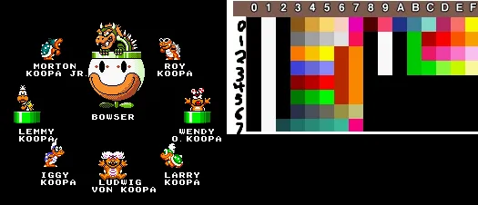
We're looking for a... Pink? Koopa Palette (always has 2 orange tones)? Oh dear. Mario World usually only
swaps out the FINAL two palette rows, and only from these options:

We know that Morton and Roy are rockin’ Koopa grey and Koopa navy palettes... but hopefully you notice a
palette that not only maps to Bowser's weird garish colors, but ALSO to an unused Koopa pink? But where
would they load it? Let me ask you a better question:
Is Mario in the room with you? Right now?
I'm going to guess that since Mario isn't here, they kicked out his color palette (rows 00 and 01) and put
(I hope) Bowser and Koopa Pink in those rows instead. There's no guarantees though, so to continue:
CCC: the possible numbers are 000, 001, 110 (binary for 6), 111 (binary for 7).
N: God if I know. I have absolutely no clue.
To recap, Using X's as complete unknowns, Ludwigs "how to draw" numbers are one of the following:
0XXX 000X
0XXX 001X
0XXX 110X
0XXX 111X
You might see that as unhelpful, since we need to translate these to hexadecimal, and we are short many
numbers to do so. You might also see a pattern:
That first number is always zero. This is true for all the Koopa kids, as that first number is only 1 if
anything is flipped upside down. Can we use this fact to rule out certain numbers’ Hexadecimal numbers?
Why We Actually Use Hexadecimal to Represent Binary
If you've made it this far, you're invested. I'm not going to waste your time, nor am I going to be cheeky,
even with the subtitle. Please look at the following numbers, one side in binary, another side in
Hexadecimal (written like $1A with a $ in front of it, for clarity):
0000 0001 = $01
0000 0111 = $07
0000 1000 = $08
0000 1111 = $0F (F is the *F*inal digit of hexadecimal, if you need to remember)
0001 0000 = $10
0111 0000 = $70
1000 0000 = $80
1111 0000 = $F0
I hope you see it. Yes, that always works. In other words, only using the table above, you can correctly
guess that $F7 = 1111 0111 in binary. Each digit of Hexadecimal corresponds with a HALF of an 8 digit binary
number. Why is this useful? Let's consider our list of possible Ludwig "how to draw" tiles:
0XXX 000X
0XXX 001X
0XXX 110X
0XXX 111X
Since the First digit is always less than 1, we can say that 0XXX 1000, which is to say that 0XXX $8.
Therefore, (and just trust me on this) a weird unknown binary digit like 0XXX 111X $80. ANY "how to draw"
tile is going to be some $XX that starts with a NUMBER, LESS than 8. That's really useful to know!
I actually started working from the bottom of the haystack and wrote down ANY numbers that followed this
rule until I could hopefully see a pattern. You may have noticed we could also make our lives easier using
our new hexadecimal trick using the last 4 digits of binary we suspect for Ludwig. If we guess for that last
X, The number we’re looking for could be ANY of the possible values:
0XXX 0000 = $_0
0XXX 0010 = $_2
0XXX 1100 = $_C
0XXX 1110 = $_E
OR
0XXX 0001 = $_1
0XXX 0011 = $_3
0XXX 1101 = $_D
0XXX 1111 = $_F
To summarize:
-I'm looking for 16 "how to draw" numbers, probably spaced apart by 4 (the X, Y, and "WHAT to draw" numbers
probably spacing them out in some order)
-Those hexadecimal numbers MUST be less than $80, IE the first digit must be anything from 0-7. NO LETTERS
ALLOWED for that first digit.
-Those Hexadecimal numbers’ final digits can be either 0,2,C,E OR 1/3/D/F, and all 16 numbers HAVE to match
(since they are all the same color, most of the digits are the CCC numbers if you recall).
Starting from the bottom I find...
 The .db is just telling you that its writing the info as bytes, ie a single 2 digit number at a time.
"tables" are an illusion dreamed up by computers, its all actually a bunch of manual assignments and
indexing done at the language level. I think. Sort of. Don't quote me
I’ve highlighted where the numbers $02 and $42 show up in a consistent pattern
The .db is just telling you that its writing the info as bytes, ie a single 2 digit number at a time.
"tables" are an illusion dreamed up by computers, its all actually a bunch of manual assignments and
indexing done at the language level. I think. Sort of. Don't quote me
I’ve highlighted where the numbers $02 and $42 show up in a consistent pattern
You've got to be kidding. I swear to god I'm not making this up. Is this seriously Ludwig? Am I gazing at
the reptilian composer’s image? I have a cluster of 17 hits right at the start, but if we eliminate the one
that Isn't 4 numbers away from another match, we have EXACTLY 16 hits. Specifically, we have the numbers
(going from bottom to top) $42, $42, $02, $02 in a repeating value. Let’s write those numbers out in binary,
and see if we can plug them back into the stupid YXPP CCCN format:
$42 = 0100 0010
$02 = 0000 0010
YXPP CCCN
Look at the only thing that changed: Whether the sprite is the left side (0) or right side (1) of Ludwig.
Gotcha' you inadequately toothed bastard.
The Koopa Kodex
Since we know that the following values are true and EXTREMELY Likely to be Ludwig (we won’t be for sure
until we try and change them) we know the following new facts:
-pp = 00. They're drawing these sprites on layer 0, the furthest back layer of the screen that isn't the
background. Makes sense!
-CCC: the Pink palette is indeed 001, and is therefore 1. loaded into Mario's slot like I suspected and 2.
IS reliably found below Bowsers palette. It’s safe to assume that palettes 110 (06 in real numbers) is Koopa
Navy and palette 111 (07 in real numbers) is Koopa Gray. IE Mortons current (incorrect) palette would be 110
currently, while Roy's is 111.
-N = 0. Mystery Solved. This might not be true, but if it isn't then I only have to change one number! And
that would be super weird! But it’s easy to guess around this number so I don't care. I'll spoil the
surprise: it’s always 0.
Therefore, the “HOW to draw" numbers for Roy are eight of 0000 1110, as Hex: $0E. See if you can work out
what Morton's address is based on all the info. Here's a hint: he's facing right in the image, which means
the X flip number should be 1! You’re looking for 9 of those numbers!
To test that I was right about finding Ludwig (and because if I was right, changing Morton and Roy would be
so much easier to find) I decided to make a quick test patch. I assumed that the 3rd of the 4 numbers, the
"What to draw" numbers were right behind the "HOW to draw" numbers. Thus...
 At this point you will dream of this image. It is burned into your soul.
You can see his arm overlaps his body on the right of Iggy.
At this point you will dream of this image. It is burned into your soul.
You can see his arm overlaps his body on the right of Iggy.
Confession Time: I have dyscalculia. It means I struggle to permanently remember the digits of any number
(more or less) greater than 15. This makes counting (say, from the bottom of a list of 1800) a difficult
task. In the above screenshot, I had miscounted and instead changed the “X Position” Numbers of Ludwig’s
Tiles. I decided all I needed to do was subtract 1 from all of those numbers, and I’d be good to go!
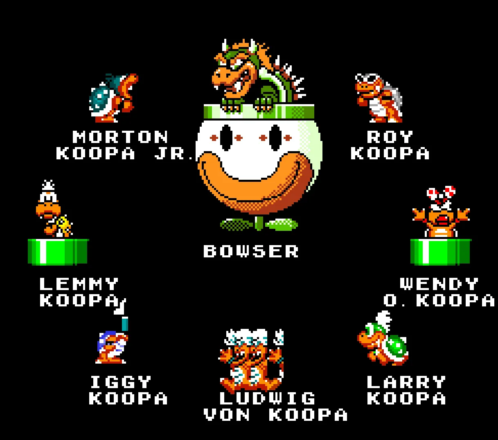
It's clear that somehow, the HOW to nubmers are entirely correct EXCEPT for their X flip numbers, and only
all the way until his last foot. I don't understand. What even is that blue block by iggy? Just what. LOL
Apologies to Iggy, the *BEST* Koopaling
I was not good to go. I’m struggling to even understand what happened here, but it’s clear that I somehow
had reached into and sculpted Iggy’s face from existed. I suspected that I had edited some of those core
values declared AFTER Iggy’s sprite gets drawn that does stuff I don’t understand. So I adjust the addresses
accordingly and…
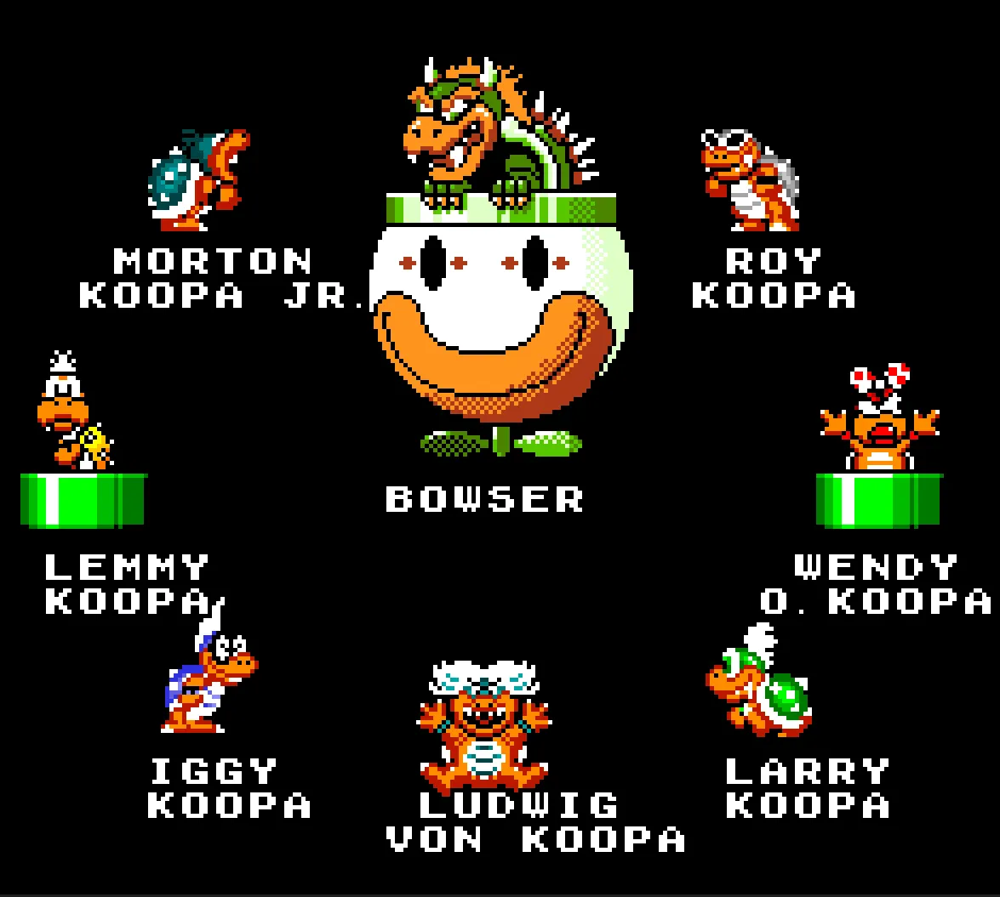
You have no idea how much pressure was relieved when I saw this in game.
Bingo.
Looks Are Finally No Longer Deceiving When Koopas Are Involved
The following image is not a mockup, but is instead a screenshot of an actual, functioning copy of Mario
World:
 It was an extremely strange feeling seeing this image. It was over- there were no more issues. This sort of
thing doesn't happen, nor does it happen quickly for me ever. I still feel weird looking at this, like it
was always meant to be.
It really could have always been this way
It was an extremely strange feeling seeing this image. It was over- there were no more issues. This sort of
thing doesn't happen, nor does it happen quickly for me ever. I still feel weird looking at this, like it
was always meant to be.
It really could have always been this way
I realized something about myself finishing this project: I don’t like when people dismiss me or my line of
questioning. I’m not a particularly fast learner, and I’m aware my questions are often odd when it comes to
technical matters. I feel a sort of emotional pain when others respond to an honest inquiry with a
reddit-style “best guess confidently posed as truth.”
When I started writing this article, I had no intention of learning any amount of romhacking- I’m glad I
did, but I realize now there was a less mature reason for it. I had learned enough and was confident enough
in my knowledge to type the sentence “they could have easily fixed this in any release of Mario World” and
be truthful. What I feared was that someone would hit me with a comment of “you can’t know that! There might
be some technical reason that makes the problem much more complex than your basic, unearned, rudimentary
understanding of it!” A part of my brain since age 7 has reliably screamed, “you can’t know that! There
might be some technical reason that makes the problem much more complex than your basic, unearned,
rudimentary understanding of it!” The arrogance of believing you don’t understand something until you
understand all of it is simply that: arrogance. I still don’t know everything there is to know about this
one screen, the credits, or Mario World’s graphics. Even if I did, I don’t know what tools the staff at
Nintendo were working with to program the game.
But no. It must be true. I could fly if I wanted to.
What I’m trying to say is that I’m the first person to fix the Koopalings in the cast roll of Super Mario
World. I have answers now. I think if I dare ask the question “why” I did, I would stop. I like having
answers.
**********************************************************************
From an early age, I have asked about the sky. I have asked about the houses, and the pipes, and the trees
and the road. I know now nobody had answers, and never will I either.
We remember the sun and know it to be so. The clouds bring the rain and soar above. “But how does it float?”
It’s light. “But Isn’t it water?” Yes. Age was the act of acceptance.
From an early age, I have asked about the turtles. “Do they ever leave their shell?” No answer satisfied me.
Age was accepting their spine is on the outside so their heart remains hidden.
I’d like to think I finally understand.
Thank you for reading.
Share
I want to once again, in one place, thank everyone who helped me:
Vidyasaur, for pointing me in the direction of Ludwig looking funny as the unraveling point for the initial
mystery.
Fantastic Fox for giving me the best direction to work in to learn the basics of Mario World Rom Hacking.
She also edited a draft of this article. If you have ever seen me type in real time, you can imagine how
horrid that is to read.
Keroboros, Amity, and Bunp for cheering me on in the Mario thread as I was attempting to modify the code
itself. It feels good to have an audience!
Ersanio for writing an extremely good guide on SNES machine code. I would have been lost without this sort
of direct documentation.
And finally, you dear reader, who made it this far. I don’t write for success or a living, and i’m thankful
for that- I will continue to write as long as somebody reads. Right now that somebody is you, and I cannot
begin to thank you enough.
Reach out to me at Griminpink@gmail.com for any omissions or inquiries (I will draw u something if u ask
nicely).
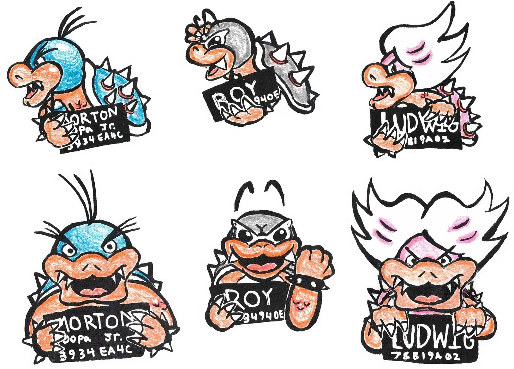